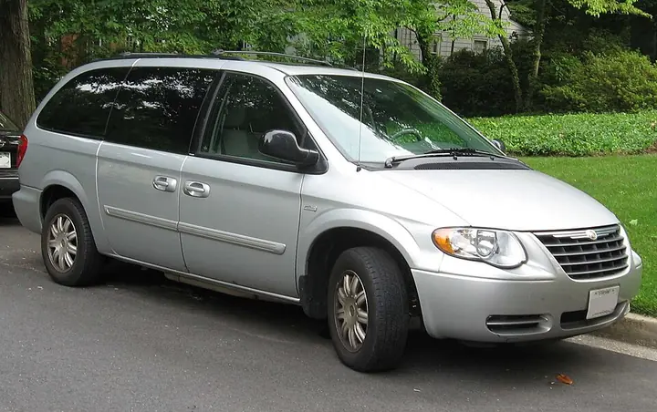
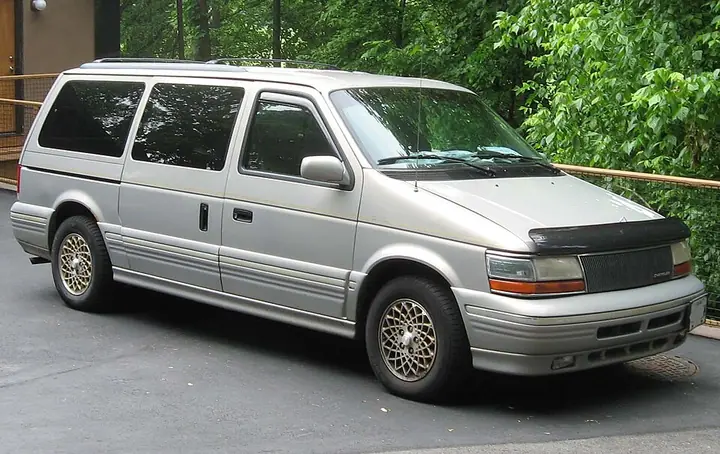
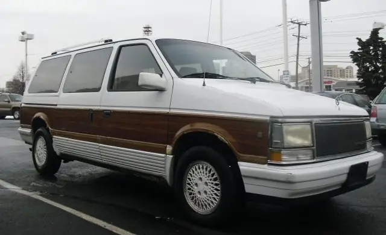
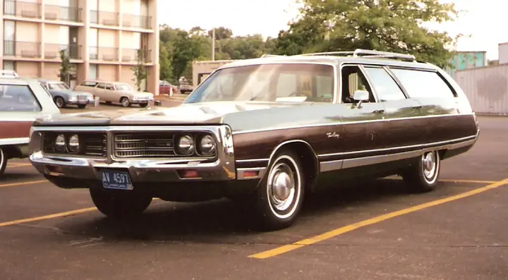

Chrysler Town & Country
Fifth generation (2008–2016) · 2007–2016
Abstract
This generation of the Chrysler Town & Country was built 2007–2016 in Windsor, Ontario, Canada (Windsor Assembly), St. Louis, Missouri, United States (2007–2008). Body styles: 4-door minivan. Layout: Transverse front-engine, front-wheel drive. Designed by Ralph Gilles.


1Specifications
| Production | 2007–2016 |
|---|---|
| Model years | 2008–2016 |
| Assembly | Windsor, Ontario, Canada (Windsor Assembly)St. Louis, Missouri, United States (2007–2008) |
| Designer | Ralph Gilles |
| Body style | 4-door minivan |
| Layout | Transverse front-engine, front-wheel drive |
| Platform | Chrysler RT platform |
| Engine | 3.3 L EGA V63.8 L EGH V64.0 L SOHC V63.6 L "Pentastar" VVT V6 (2011–)2.8 L CRD diesel (Europe and Philippines) |
| Transmission | 4-speed automatic6-speed automatic |
| Wheelbase | 121.2 in |
| Length | 202.5 in |
| Width | 78.7 in |
| Height | 68.9 in |
| Also called | Lancia Voyager/Grand Voyager (Europe)Chrysler Grand Voyager (Europe: 2008–2010; Australia, South Africa, Middle East: 2008–2016; UK, Ireland, Argentina and Brazil: 2008–2016; Asia and Russia: 2011–2016) |
| Related | Dodge Grand CaravanChrysler Grand VoyagerVolkswagen Routan |
2Versions
- Environmental impact
- Volkswagen Routan
- 2010 recall
- 2011 Chrysler Town & Country (2010–)
- Lancia Voyager (2011–)
- 2013 Chrysler Town & Country update (facelift)
- 2013 Town & Country S
- 2013 Town & Country Tanya Moss edition
- 2014 Chrysler Town & Country 30th Anniversary Edition, Town & Country S
- Town & Country 90th Anniversary Edition
- Total sales
3Previous generations









4Generation by generation
Length +6% from the first to the last
1990 19894,862 mm
1990–1995 19904,897 mm
1996–2000 19954,735 mm
2001–2007 20004,808 mm
2008–2016 20075,144 mm
Weight −1% from the first to the last
1990–1995 19901,794 kg
1996–2000 19951,752 kg
2001–2007 20001,769 kg